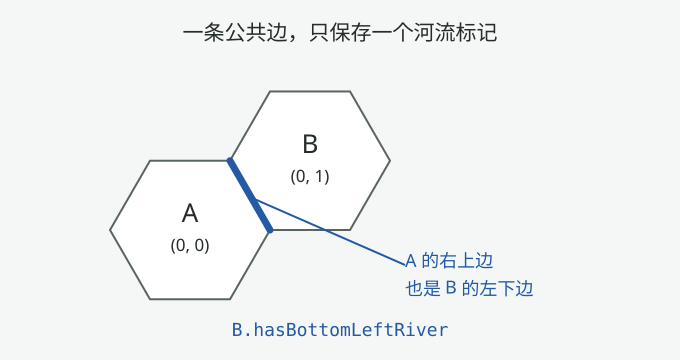

地块怎样组成地图
第五课解决了“一块地在哪”，这一课解决“地图本身是什么”：几千块地怎样装进内存，一块地内部的数据怎么分层，邻居查询为什么快，以及开了环绕的世界怎样在东西两端接起来。读完后你应当能解释 tileList 与 tileMatrix 的分工，手算小地图的矩阵布局，并推演环绕边界上的邻居。
目标、回顾与场景
先给两个场景。场景一：新开一局游戏，地图生成器造出几千块地，之后单位每次移动都要问“隔壁是哪块地、能不能进”——问得这么频繁，总不能每次都扫一遍列表。场景二：你开了一局环绕世界（world wrap）地图，单位走到最右一格再往右，应该出现在最左一列；系统还得能算出“这两块地其实是邻居”。这两个场景分别对应本课的两大主角：存储布局（tileList 与 tileMatrix）与环绕补偿（经度方向平移一整个地图宽度）。
先找回第五课的两件工具
本课的四个问题
- 存两份为什么：tileList 与 tileMatrix 各司什么职？谁写进存档？
- 一块地有什么：地形、特征、奇观、资源、改良怎样分层，河流存在哪？
- 邻居为什么快：neighbors 的惰性缓存和 setTransients 的两个循环有什么关系？
- 环绕怎么做：右边界外一格要补偿什么坐标？为什么必须同时改变 x、y？
读完还要会一件事：不看资料，手算半径 2 六边形地图的矩阵布局，并推演环绕地图上边界邻居的坐标。
两个关键概念
- 坐标与画面位置：
x+y决定上下位置，y−x决定左右位置。第 4 节用这两个量说明环绕换算。 - 序列化与瞬态：第二课的分类——tileList 属于对局状态（写进存档）；tileMatrix 属于运行时缓存（@Transient，读档后由 setTransients 重建）。
| 内容 | 约用时 | 读完应能说明 |
|---|---|---|
| 两份存储与矩阵重建 | 14 分钟 | 说出 tileList/tileMatrix 分工，手算小地图矩阵 |
| 地块分层 | 10 分钟 | 按层列出地块数据，说出河流存哪里 |
| 邻居缓存与顺序 | 10 分钟 | 解释惰性缓存与两遍循环的原因 |
| 环绕与测试 | 16 分钟 | 推演补偿坐标，说出分布测试的用途 |
1. 同一批地块，两份存储
打开 TileMap 类，先看字段区。同一批地块被存了两份：一份是对象列表，一份是按坐标排的二维数组：
// TileMap.kt 开头（相关字段）：同一批地块，存了两份。
class TileMap(initialCapacity: Int = 10) : IsPartOfGameInfoSerialization {
// 参与序列化的字段
var mapParameters = MapParameters() // 形状、大小、环绕、种子等参数
var tileList = ArrayList<Tile>(initialCapacity) // 全部地块，写进存档
// @Transient 字段：不写存档，读档后重建
@Transient
var tileMatrix = ArrayList<ArrayList<Tile?>>()
// 原注释：比 hashmap 快好几倍，差距惊人
@Transient var leftX = 0
@Transient var bottomY = 0
@Transient var width = 0
}tileList 是权威列表：所有地块对象都在里面，随对局写进存档。遍历地图（“所有地块都怎样怎样”）直接走它。
tileMatrix 是它的“按坐标索引的视图”：同样一批对象，按坐标摆进二维数组，查一块地用 O(1) 数组下标而不是哈希查找。字段的英文注释直接给了理由——比 hashmap 快好几倍。因为矩阵下标从 0 开始，而坐标可以是负数，所以另存 leftX、bottomY 两个偏移（坐标最小值），查表时做平移。
这个矩阵不是一建好就永远在的：它是 @Transient 字段，每次读档都要从 tileList 重建。重建代码在 setTransients：
// TileMap.setTransients（部分代码）：从 tileList 重建矩阵。
if (tileMatrix.isEmpty()) {
val topY = tileList.maxOf { it.position.y }
bottomY = tileList.minOf { it.position.y }
val rightX = tileList.maxOf { it.position.x }
leftX = tileList.minOf { it.position.x }
// 先用算好的尺寸分配容量，避免反复扩容拷贝
tileMatrix.ensureCapacity(rightX - leftX + 1)
repeat (rightX - leftX + 1) {
val row = ArrayList<Tile?>(topY - bottomY + 1)
repeat(topY - bottomY + 1) { row.add(null) }
tileMatrix.add(row)
}
} else {
// 地图生成器会反复调用；检查旧矩阵尺寸与坐标范围相符
check(tileMatrix.size in (- 2 * leftX)..(3 - 2 * leftX)) {
"TileMap.setTransients called on existing tileMatrix of different size"
}
}
for (tileInfo in values) {
tileMatrix[tileInfo.position.x - leftX][tileInfo.position.y - bottomY] = tileInfo
}第一步扫一遍 tileList，求出坐标的包围盒：x 从 leftX 到 rightX，y 从 bottomY 到 topY。第二步按包围盒大小建矩阵，先用 ensureCapacity 分配好容量，避免 ArrayList 扩容时反复拷贝数组。
第三步把每块地按 (x − leftX, y − bottomY) 放回矩阵。注意矩阵元素类型是 Tile?：六边形地图放进这个矩形包围盒后，四个角落是空的（地图外），那些位置保持 null。所以矩阵是“坐标盒子”，不是“地图形状”——地图形状由哪些位置非 null 决定。
查一块地就一句数组下标。有两个入口，一个假设坐标有效，一个允许查空：
// TileMap：按坐标查地块（相关代码）。
@Readonly operator fun get(x: Int, y: Int) =
tileMatrix[x - leftX][y - bottomY]!! // 坐标必须有效
@Readonly
fun getOrNull(x: Int, y: Int): Tile? =
tileMatrix.getOrNull(x - leftX)?.getOrNull(y - bottomY)
// 越界或矩阵空洞都返回 nullget 末尾的 !! 把 null 变成异常：调用方传越界坐标或查到地图空洞，直接抛空指针。它用在“坐标必然有效”的热路径上，不付检查开销。
getOrNull 温和：越界返回 null，落在矩阵空洞上也返回 null。第 4 节的环绕探测就是先拿它问“这里有没有地”，没有才考虑绕圈补偿。注意 getOrNull 本身不做环绕——注释里写明，要环绕用 getIfTileExistsOrNull。
拿半径 2 的六边形地图手算一下。tileList 有 1 + 6×2×3/2 = 19 块地；矩阵是 5×5 的盒子，6 个角落是 null：
矩阵 [x−leftX][y−bottomY]，leftX=−2，bottomY=−2；每格写该处的 HexCoord
x=−2 x=−1 x=0 x=1 x=2
y= 2 · · (0,2) (1,2) (2,2)
y= 1 · (−1,1) (0,1) (1,1) (2,1)
y= 0 (−2,0) (−1,0) (0,0) (1,0) (2,0)
y=−1 (−2,−1) (−1,−1) (0,−1) (1,−1) ·
y=−2 (−2,−2) (−1,−2) (0,−2) · ·为什么 6 个角落空着？半径 2 的六边形只包含到中心距离 ≤ 2 的格子：对角方向的两个坐标差异号时距离是 |x|+|y|，所以 (−2,2) 距离 4，出界；同号时距离是 max(|x|,|y|)，所以 (2,2) 距离 2，在界内。矩阵的行列数都是 2×半径+1，格子数却只随半径二次增长——盒子比六边形多出的角落就是那些 null。这也是为什么 getOrNull 必须区分“越界”和“空洞”。
2. 一块地的分层数据
现在打开 Tile 类看一块地存了什么。字段很多，但按“层”分组后很好记：
// Tile.kt：一块地的存档字段，按层分组（部分代码）。
var position = HexCoord() // 第五课：地块在哪
lateinit var baseTerrain: String // 基础地形：Grassland、Ocean……
var terrainFeatures: List<String> = listOf() // 叠加特征：Forest、Hill……
var naturalWonder: String? = null // 奇观：整块覆盖外观与产出
var resource: String? = null // 资源：Horses、Iron……
var resourceAmount: Int = 0 // 战略资源储量
var improvement: String? = null // 改良设施：Farm、Mine……
var improvementIsPillaged = false // 改良是否被劫掠
var roadStatus = RoadStatus.None // 道路/铁路是独立一层
var roadIsPillaged = false
var hasBottomRightRiver = false // 河在“边”上：三个布尔
var hasBottomRiver = false
var hasBottomLeftRiver = false第一层是坐标：position，第二课讲过城市存坐标不复制地块，地块自己当然要存。
第二层是地形：baseTerrain 是必有的一项（草地、平原、海洋……），terrainFeatures 是叠在上面的特征列表（森林、丘陵、绿洲……），一层基础加多层特征，所以它是 List 而不是单个字段。
第三层是奇观：naturalWonder 极少数地块才有，出现时整块地的外观与产出都按奇观算。第四层是资源与改良：resource 是地块固有的可收获物，improvement 是玩家建的设施，各占一个槽位。第五层是道路，与改良分开——因为道路有所有权（谁修的）。
最后三个布尔是河流：注意河不是格子的属性，是边的属性。一条河在两边格子之间，Unciv 把“这块地的正下方、右下、左下三条边有没有河”记在这块地上；每格各记三条“下边”，每条边就恰好被登记一次。河流怎么生成是第 09 课的内容，这里先记住它的存储形状。
所有字段里存的都是名字（字符串），不是规则对象——这是第二、三课的组合拳：存档写名字，读档时按 ruleset 查出对象：
// Tile.setTerrainTransients（部分代码）：名字 → 规则对象。
fun setTerrainTransients() {
if (!ruleset.terrains.containsKey(baseTerrain))
throw Exception("Terrain $baseTerrain does not exist in ruleset!")
baseTerrainObject = ruleset.terrains[baseTerrain]!!
setTerrainFeatures(terrainFeatures)
isWater = getBaseTerrain().type == TerrainType.Water
isLand = getBaseTerrain().type == TerrainType.Land
isOcean = getBaseTerrain().isOcean
}
// setTerrainFeatures 里组装的“地形栈”（部分代码）。
allTerrains = sequence {
yield(baseTerrainObject) // 最底：基础地形
if (naturalWonder != null) yield(getNaturalWonder())
yieldAll(terrainFeatureObjects) // 最上：地形特征
}.toList().asSequence()本地 Tile.ktsetTerrainTransients · L856setTerrainFeatures · L958
第三课讲过 Ruleset 把名字映射成对象，这里就是落点：ruleset.terrains[baseTerrain] 查出基础地形对象缓存起来。如果存档里的地形名在规则集里不存在（模组被移除、旧档），直接抛异常——这是数据完整性的第一道防线。
缓存的不止对象，还有 isWater/isLand/isOcean 三个布尔。单位能不能进入这块地，每个回合要问成千上万次，把规则查询的结果预先算成布尔，比每次查规则集快得多。
allTerrains 是渲染和规则查询用的“地形栈”：基础地形在底、奇观在中间、特征在最上，顺序就是画面叠放顺序。toList 后转 Sequence——先把一次性计算结果固定下来，再对外提供惰性遍历。
层序不只是显示问题。查询这块地的规则时（第三课的 unique 机制），Tile.getMatchingUniques 把地形栈、改良、资源的 unique 串在一起查——栈的顺序决定哪层能覆盖哪层。地形带来的产出怎么算、改良完成后数值怎么变，是第 13 课的地块产出主题，本课只建立“层”的概念。
3. 邻居缓存与初始化顺序
单位移动、城市扩张、寻路都要反复问“我的邻居是谁”。第五课讲过邻居 = 坐标加六个固定偏移，本课看这份查询怎样缓存下来：
// NeighborDirection.kt：六个方向，每个绑定一个钟点。
enum class NeighborDirection(val clockPosition: Int) {
TopRight(2), BottomRight(4), Bottom(6),
BottomLeft(8), TopLeft(10), Top(12);
companion object {
val byClockPosition = entries.associateBy { it.clockPosition }
}
}
// Tile.kt：邻居一次算好，永久缓存。
// 原注释：邻居访问极其频繁，且地块邻居永不变，
// 所以算一次存起来高效得多。
@delegate:Transient
val neighbors: Sequence<Tile> by lazy {
if (!isTilemapInitialized()) emptySequence()
else getTilesAtDistance(1).toList().asSequence()
}本地 NeighborDirection.ktNeighborDirection · L3neighbors · L116
NeighborDirection 是第五课偏移表的“名字版”：六个方向枚举，每个绑定一个钟点，再提供 byClockPosition 反查。代码里需要“描述方向”的场合（河流、道路的边上）用它，需要“算坐标”的场合用钟点表。
neighbors 用 Kotlin 的属性委托 by lazy：第一次访问时才计算，算完把结果存住，以后再访问直接拿缓存。它敢缓存是因为六边形地图的邻居关系是静态的——地块不搬家。toList 把 Sequence 具体化（一次性算完六格），再包回 Sequence 给聚合操作省内存。
如果这块地还没连上地图（地图编辑器里的预览地块），返回空序列——这就是 isTilemapInitialized 检查的意义。
这个“算一次永远用”的缓存，给 setTransients 埋了一个顺序坑。看 TileMap.setTransients 的第二个循环：
// TileMap.setTransients（部分代码）：两个循环故意分开。
for (tileInfo in values) {
tileMatrix[tileInfo.position.x - leftX]
[tileInfo.position.y - bottomY] = tileInfo
}
for ((index, tileInfo) in values.withIndex()) {
// Do ***NOT*** call Tile.setTerrainTransients before
// the tileMatrix is complete - setting transients might
// trigger the neighbors lazy. When that lazy runs,
// some directions might be omitted because
// getIfTileExistsOrNull looks at tileMatrix.
// Thus filling Tiles into tileMatrix and setting their
// transients in the same loop will leave incomplete
// cached `neighbors`.
tileInfo.tileMap = this
tileInfo.zeroBasedIndex = index
tileInfo.ruleset = this.ruleset!!
tileInfo.setTerrainTransients()
tileInfo.setUnitTransients(setUnitCivTransients)
}第一遍只做一件事：把全部地块填进矩阵。第二遍才重建每块的引用（tileMap 指针、规则集、地形对象等）。为什么不能合成一个循环？作者用整段注释回答了：setTerrainTransients 可能触发 neighbors 的惰性计算，而那个计算会去读 tileMatrix。如果边填矩阵边初始化，前面某块地在计算邻居时矩阵还没填完，它会把“缺了若干方向的邻居”当成最终结果缓存下来——而缓存永远不会自动刷新，这个错会一直带到游戏结束。
第二遍里还顺手把 zeroBasedIndex 设成 tileList 下标：寻路算法用单个整数位图记录“哪块地访问过”，块编号就是列表下标。tileList 的顺序因此不能随便变——它是存档顺序，也是这个索引。
一条公共边，究竟读哪个 Tile 的字段
每个 Tile 都保存自己左下、正下、右下三条边的河流标记。现在只看相邻的 A、B 两块地之间的那一条公共边：如果 B 在 A 的右上方，这条边从 A 看是“右上边”，从 B 看就是“左下边”，所以它的状态保存在 B.hasBottomLeftRiver。

// Tile.isConnectedByRiver 的 when 分支；省略前面的自身比较检查。
// 方向均指 otherTile 相对 this 的位置。
return when (tileMap.getNeighborTileClockPosition(this, otherTile)) {
2 -> otherTile.hasBottomLeftRiver // 右上：读对方的左下边
4 -> hasBottomRightRiver // 右下：读自己的右下边
6 -> hasBottomRiver // 正下：读自己的正下边
8 -> hasBottomLeftRiver // 左下：读自己的左下边
10 -> otherTile.hasBottomRightRiver // 左上：读对方的右下边
12 -> otherTile.hasBottomRiver // 正上：读对方的正下边
else -> throw Exception("Should never call this function on a non-neighbor!")
}先取 otherTile 相对 this 的钟点方向。第一个分支是 2 点钟：对方在右上，公共边就是对方的左下边，所以读 otherTile.hasBottomLeftRiver。
接着的 4、6、8 点钟分别位于右下、正下、左下；这三条边都由 this 保存，依次读取自己的 hasBottomRightRiver、hasBottomRiver、hasBottomLeftRiver。
最后的 10、12 点钟位于左上、正上，公共边分别是对方的右下边、正下边，因此又读取 otherTile 的字段。若走到 else，源码会抛异常；原教材“else 返回 false”的注释有误。
换一个查询方向，仍然读同一个字段。上图中，A.isConnectedByRiver(B) 走 2 点钟分支，读取 B.hasBottomLeftRiver；B.isConnectedByRiver(A) 走 8 点钟分支，读取的还是 B.hasBottomLeftRiver。A 自己的三个河流字段描述的是 A 下方另外三条边，与图中这条公共边无关。
因此，“每块地有三个河流字段”说的是数据放在哪里；“河流状态属于边”说的是每个字段描述什么。这里一个布尔表示一段公共边上是否有河，整条蜿蜒的河流可以经过很多段边，由多个布尔共同表示。
4. 环绕边界：左右两端怎样接起来
先看需求：一张环绕地图的最右边有一块地，单位向右走一步，坐标会落到地图右边之外。程序需要把这个“地图外坐标”换成左边对应的已有地块；如果单位在最左边，则反过来换到右边。
要保持上下位置，只改变左右位置
第五课的画面换算是 worldX=1.5(y−x)、worldY=(√3/2)(x+y)。省去固定比例，便可以用下面两个量比较位置：
S = x + y // 竖直位置：S 相同的地块中心高度相同
D = y − x // 水平位置：D 越大，地块越靠右
x 加 1：向左上，S 加 1，D 减 1
y 加 1：向右上，S 加 1，D 加 1于是，x 加 1 和 y 减 1 会让上下变化抵消，留下向左的水平移动：
(x, y) → (x+r, y−r)
S' = (x+r) + (y−r) = x+y = S // 上下位置不变
D' = (y−r) − (x+r) = D − 2r // 向左移动 2r 个水平单位对宽 W 列的矩形环绕地图，源码取 r=W/2。于是 S 不变、D 减少 W，恰好水平向左平移一整张图；反方向用 (−r,+r)。S、D 是本节的推导记号，不是像素值或 TileMap 字段。
用宽 6 的小图走一遍
设矩形小图宽 6、高 5，D 的有效范围为 −3..2，r=3。最右侧地块 P(−1,1) 的 2 点钟邻居候选是 Q(−1,2)。Q 的 D=3，超出右边界，给它加上向左一圈的补偿：
P(−1,1) + (0,1) = Q(−1,2) // 先按普通邻居规则走一步
Q(−1,2) + (3,−3) = R(2,−1) // 再向左平移一整张图
P：S = −1+1 = 0，D = 1−(−1) = 2
Q：S = −1+2 = 1，D = 2−(−1) = 3
R：S = 2+(−1) = 1，D = −1−2 = −3P 到 Q 是单位移动，所以 S 从 0 变成 1；Q 到 R 是环绕换算，所以 S 保持 1，D 从 3 减少 6 变成 −3。R 就是左边界的对应地块。环绕换算没有创建新 Tile，也没有修改 R.position；它只是把查询坐标换成另一份坐标，再从地图中取出已有对象。
getLatitude / getLongitude · L51hex2WorldCoords · L127getColumn · L156
源码依次尝试原坐标、左移坐标、右移坐标
// TileMap.getIfTileExistsOrNull：查不到就按环绕补偿。
@Readonly
fun getIfTileExistsOrNull(x: Int, y: Int): Tile? {
val tile = getOrNull(x, y)
if (tile != null) return tile
if (!mapParameters.worldWrap)
return null
var radius = mapParameters.mapSize.radius
if (mapParameters.shape == MapShape.rectangular)
radius = mapParameters.mapSize.width / 2
// A. 从右绕到左：可能落在“世界尽头”的另一侧
val rightSideTile = getOrNull(x + radius, y - radius)
if (rightSideTile != null) return rightSideTile
// B. 从左绕到右
val leftSideTile = getOrNull(x - radius, y + radius)
if (leftSideTile != null) return leftSideTile
return null
}本地 TileMap.ktgetIfTileExistsOrNull · L380本地 MapParameters.kt
先调用 getOrNull 查原坐标；命中就返回。未命中时，若没有开启 worldWrap，返回 null。
接着确定 radius：矩形图取 mapSize.width / 2，其他形状使用 mapSize.radius。
A 分支试 (x+radius, y−radius)，也就是向左平移一整张图；B 分支试 (x−radius, y+radius)，也就是向右平移一整张图。任一候选命中就返回已有 Tile。
两次都查不到才返回 null。越过南北边界的坐标，即使左右平移后仍可能不在地图内。
延伸阅读：源码命名、环绕距离与方向
源码命名：getLatitude=x+y，getLongitude=x−y；getColumn=y−x，与 getLongitude 符号相反。第五课原先把 getLongitude 写成 y−x 有误，现已更正。
本节宽 6 的图用于手算和直接调用源码；正常新游戏界面另有尺寸限制。直接构造时还需配置 mapParameters.shape、mapSize、worldWrap，查询会读取这些参数。方法只各尝试一次左右平移。
量距离时还会反过来操作：已知地图内的一块地，找它在地图外的等价位置。下面的 getUnwrappedPosition 使用原点 (0,0) 作选择依据：
// TileMap.getUnwrappedPosition：找地图外“离原点最近”的等价坐标。
@Readonly
fun getUnwrappedPosition(position: HexCoord): HexCoord {
if (!contains(position))
return position // 已在地图外，不需要展开
val radius = if (mapParameters.shape == MapShape.rectangular)
mapParameters.mapSize.width / 2
else mapParameters.mapSize.radius
val vectorUnwrappedLeft = HexCoord.of(position.x + radius, position.y - radius)
val vectorUnwrappedRight = HexCoord.of(position.x - radius, position.y + radius)
fun squareSum(hexCoord: HexCoord): Int {
val x = hexCoord.x
val y = hexCoord.y
return x * x + y * y
}
// 平方和小的就是离原点近的一侧
return if (squareSum(vectorUnwrappedRight) < squareSum(vectorUnwrappedLeft))
vectorUnwrappedRight
else vectorUnwrappedLeft
}若传入坐标已经在地图外，直接返回；否则按形状确定 radius，计算向左、向右各平移一圈的两个候选位置。
squareSum 分别计算候选位置的 x²+y²，return 选择值较小的一项，相等时取左侧候选。这两个候选的高度相同，因此这次比较也会选出水平方向上离原点更近的一项。
每个候选与原位置相隔一圈，两候选之间相隔两圈。方法没有接收观察者的位置，也不检查 worldWrap 开关；调用方须判断是否需要展开。返回的是计算用坐标，不保证地图内有该坐标对应的 Tile。
绕了圈，两块地的距离也得跟着变。第五课的 getDistance 不处理环绕，Tile.aerialDistanceTo 把它补上：
// Tile.aerialDistanceTo（部分代码）：带环绕的距离。
val distance = maxOf(abs(xDelta), abs(yDelta), abs(xDelta - yDelta))
if (!tileMap.mapParameters.worldWrap || distance <= tileMap.width / 2)
return distance
// 距离超过半个世界宽：把对方展开到地图外等价坐标，再量一次
val otherTileUnwrappedPos = tileMap.getUnwrappedPosition(otherPositionHexcoord)
val xDeltaWrapped = positionHexcoord.x - otherTileUnwrappedPos.x
val yDeltaWrapped = positionHexcoord.y - otherTileUnwrappedPos.y
val wrappedDistance =
maxOf(abs(xDeltaWrapped), abs(yDeltaWrapped), abs(xDeltaWrapped - yDeltaWrapped))
return min(distance, wrappedDistance)先按三分量 max 公式算普通六边形距离。若没有开启环绕，或该距离不超过 tileMap.width / 2，代码直接返回；这里 width 来自地块的最大、最小列号。
否则调用 getUnwrappedPosition 取得对方的一个展开坐标，重新计算距离，最后取两次距离的较小值。上面的宽 6 列例子中，P(−1,1) 到 R(2,−1) 普通距离为 5；R 的展开坐标是 Q(−1,2)，到 P 的距离为 1，因此返回 1。这是几何距离，实际移动还要考虑地形、单位通行规则等条件。
环绕还影响“反推方向”：跨接缝的相邻地块，保存的坐标差会在邻居偏移之外多出一圈平移量。下面看 getNeighborTileClockPosition 的相关分支；使用时应先确定传入的两个地块相邻：
// TileMap.getNeighborTileClockPosition（部分代码）：
// 除直接坐标差外，还要试“对方平移一个世界宽”后的差。
val xWrapDifferenceBottom = if (radius < 3) 0 else x1 - (x2 - radius)
val yWrapDifferenceBottom = if (radius < 3) 0 else y1 - (y2 - radius)
val xWrapDifferenceTop = if (radius < 3) 0 else x1 - (x2 + radius)
val yWrapDifferenceTop = if (radius < 3) 0 else y1 - (y2 + radius)
return when {
xDifference == 1 && yDifference == 1 -> 6
xDifference == -1 && yDifference == -1 -> 12
xDifference == 1 || xWrapDifferenceBottom == 1 -> 4
yDifference == 1 || yWrapDifferenceBottom == 1 -> 8
xDifference == -1 || xWrapDifferenceTop == -1 -> 10
yDifference == -1 || yWrapDifferenceTop == -1 -> 2
else -> -1
}前四行分别计算对方 x 或 y 加减 radius 后的差；radius 小于 3 时将这些差置 0，使后面的 ±1 比较不命中。
when 先用两个直接坐标差识别正下、正上。接着用直接差或补偿后的单个分量识别 4、8、10、2 点钟。宽 6 列例子中，从 P(−1,1) 看 R(2,−1)，最后一个条件 y1 − (y2 + radius) = 1 − (−1 + 3) = −1 命中，因此得到 2 点钟。
这些分支不是完整的相邻校验：部分分支只检查一个分量，方法本身也不检查 worldWrap。不能用“结果不为 −1”证明任意两格相邻。源码没有解释 radius < 3 的完整设计原因，本课只说明其实际行为。
5. 两种形状与测试防线
TileMap 有两个构造器，对应两种地图形状：按半径的六边形、按宽高的矩形。生成器用它们造出“底图”，再往上铺地形（第 07 课的主场）：
// TileMap 按半径构造器（部分代码）：正六边形地图。
constructor(radius: Int, ruleset: Ruleset, worldWrap: Boolean = false)
: this (HexMath.getNumberOfTilesInHexagon(radius)) {
...
for (vector in HexMath.getHexCoordsInDistance(HexCoord.Zero, radius, worldWrap))
tileList.add(Tile().apply {
position = vector.asSerializable()
baseTerrain = firstAvailableLandTerrain
})
setTransients(ruleset)
}
// TileMap 按宽高构造器（部分代码）：矩形地图。
// world-wrap maps must always have an even width, so round down
val wrapAdjustedWidth = if (worldWrap && width % 2 != 0) width - 1 else width
// 偶数宽：列范围 -w/2..(w-1)/2，例如 w=4 → -2..1
for (column in -wrapAdjustedWidth / 2 .. (wrapAdjustedWidth-1) / 2)
for (row in -height / 2 .. (height-1) / 2)
tileList.add(Tile().apply {
position = HexMath.getTileCoordsFromColumnRow(column, row).asSerializable()
baseTerrain = firstAvailableLandTerrain
})
setTransients(ruleset)六边形构造器先用第五课的环公式算出总格数预分配列表，再枚举到中心距离 ≤ radius 的全部坐标，每格放一块“统一陆地”的 Tile。矩形构造器用“列行”思维枚举，再经 getTileCoordsFromColumnRow（HexMath 里 column = y−x、row = (x+y)/2 的反解）换算成 HexCoord。
两个构造器最后都调用 setTransients，把矩阵立即建好——所以新生成的地图立即可查。底图全是同一种陆地，真正的陆海分布、山脉、资源由 MapGenerator 分阶段往上写（第 07～10 课），TileMap 只提供“摆好了格子”的容器。
第四课说过测试是一等源码。地图这块没有“断言矩阵每个格子”的测试，但有两条守护生成结果的防线，一条保证所有组合都能生成，一条做统计体检：
// MapGenerationTests.testAllMapGenerations（部分代码）：
// 所有地图类型 × 形状 × 环绕开关，都必须能生成出来。
for (mapType in MapType.allValues) {
for (mapShape in MapShape.allValues) {
for (worldWrap in listOf(true, false)) {
mapParameters.shape = mapShape
mapParameters.worldWrap = worldWrap
mapGenerator.generateMap(mapParameters)
}
}
}
// terrainTileCountsReasonableForHexMaps（部分代码）：
// 聚合 20 张图统计各地形数量，离预期太远就判失败。
for (seed in 1L..20L) {
val tileMap = mapGenerator.generateMap(mapParameters)
for (tile in tileMap.tileList)
terrainCounts.compute(tile.baseTerrain) { _, old -> 1 + (old ?: 0) }
}
// 不是硬限制：差得离谱才说明生成器坏了
assertApproximately(terrainCounts["Ocean"], 4079)
assertApproximately(terrainCounts["Coast"], 2443)第一条是烟雾测试：13 种地图类型 × 3 种形状 × 2 种环绕开关全部跑一遍，任何组合抛异常都会失败。它不检查地图长得好不好看，只保证“容器 + 各生成阶段”对每种配置都能走通。
第二条是分布测试：单张地图的海洋数量随种子波动很大（注释说“极端多变”），所以聚合 20 张图再比较各地形数量是否落在预期区间的 2 倍范围内。某天有人改了噪声参数导致全世界变成海洋，这条会立刻报警。测试文件里同一个断言模式分别跑六边形、矩形、平面地球三种形状。
第四课的 TestGame 工具里也封装了这两个构造器，测试里造小地图就靠它们：
// TestGame.kt（部分代码）：测试里快速换地图。
// 造一张矩形地图，替换当前地图
fun makeRectangularMap(newHeight: Int, newWidth: Int, baseTerrain: String) {
val newTileMap = TileMap(newWidth, newHeight, ruleset, tileMap.mapParameters.worldWrap)
...
gameInfo.tileMap = newTileMap
}
// 造一张六边形地图
fun makeHexagonalMap(newRadius: Int, baseTerrain: String) {
val newTileMap = TileMap(newRadius, ruleset, false)
...
gameInfo.tileMap = newTileMap
}测试想验证“两块地之间隔着河能不能通船”，就先 makeHexagonalMap(5) 拿一张半径 5 的空底图，再把地形、河流写到指定格子上——第四课“用最小场景验证联动”的地图部分就是这么搭出来的。
这两个助手直接调用本课的 TileMap 构造器，说明构造器本身就是最小可用单元：不依赖游戏、不依赖生成器，只依赖 Ruleset。这也是为什么第 2 节说“底图全是统一陆地”。
心智模型
- tileList 保存地块列表，tileMatrix 保存同一批对象的坐标索引；矩阵不写进存档，由 setTransients 重建。
- 查块用 (x−leftX, y−bottomY)；包围盒内也可能没有地块。get 对无效坐标抛异常，getOrNull 返回 null。
- 地块分别保存基础地形、特征、奇观、资源、改良和道路状态；地形名字通过规则集查回对象。
- 每格保存自己左下、正下、右下三条边的河流标记；查询上方三条边时读对应邻居的字段。同一条公共边，从两侧查询都读同一个布尔。
- neighbors 首次访问后缓存结果；setTransients 必须先填满矩阵，再进行可能触发邻居查询的初始化。
- 矩形图宽 W=2r：加 (r,−r)，竖直位置 S=x+y 不变，水平位置 D=y−x 减少 W，查到左侧的对应地块。
检索与推演
先不看上面的代码，凭记忆回答。选错了，再回到对应段落弄清原因。选择题只是热身；不看资料手算出矩阵布局和环绕补偿，才说明这节课的主要内容已经理解了。
选择题答案与核对位置
1：对象列表那一位；2：读档时一步建好；3：直接抛空指针异常；4：(x+r, y−r) 来补偿。分别对应 两份存储、setTransients、get 与 getOrNull、环绕边界。
练习 A · 手算半径 2 的矩阵（6 分钟）
不看第 1 节的图：写出半径 2 六边形地图的 tileList 格数、矩阵行列数，标出六个 null 的位置，并解释每个 null 为什么出界（用第五课的 getDistance 两分支）。
展开核对要点
tileList = 1 + 6×2×3/2 = 19 块；矩阵 5×5。null 六个：(−2,2)、(−1,2)、(−2,1)、(2,−1)、(1,−2)、(2,−2)。判定：到中心 (0,0) 的距离超过 2 就出界。例如 (−2,2)：Δx、Δy 异号 → |Δx|+|Δy| = 4 > 2；(2,−2) 同理。而在界内的 (2,2)：同号 → max(2,2) = 2。手算完对照第 1 节的图检查。
练习 B · 环绕与公共边（6 分钟）
在第 4 节的小图上，从 R(2,−1) 查询 8 点钟邻居：候选坐标是什么，换算后命中哪个 Tile？用 S、D 说明移动方向。再看河流图：A 查 B 与 B 查 A 各走哪个分支、读哪个字段？
展开核对要点
候选为 (2,−2)，S=0、D=−4，越过左边界。向左加 (3,−3) 得 (5,−5)，查不到；向右加 (−3,3) 得 P(−1,1)，S 仍为 0、D 变为 2，命中最右侧。河流查询：A 查 B 走 2 点钟，B 查 A 走 8 点钟，两次都读 B.hasBottomLeftRiver。
练习 C · 用三要素读测试（5 分钟）
对 MapGenerationTests.testAllMapGenerations 写出 given、when、then，并说明它为什么不断言地图长什么样。
展开核对要点
given：内置规则集 + 全部地图类型×形状×环绕开关的组合；when：每种组合调用 mapGenerator.generateMap；then：不抛异常（测试通过即断言完成）。它不断言外观，是因为单张地图随机性太大，外观正确性交给 terrainTileCountsReasonableFor* 系列分布测试（聚合 20 张图比较数量区间）。两类测试分工：烟雾测试管“能生成”，分布测试管“没改坏”。
练习 D · 本地核验（可选，5～10 分钟）
跑 :tests:test --tests "com.unciv.logic.map.HexmathTests" 确认环境（第五课已跑通则跳过）；有余力再跑 :tests:test --tests "com.unciv.logic.map.MapGenerationTests"，观察三种形状的统计断言。
展开核对要点
HexmathTests 应 8 过 0 失败（本课程核对时 Gradle MCP 实测）。MapGenerationTests 会真跑地图生成，几十秒到几分钟：testAllMapGenerations 遍历全部组合，三条 terrainTileCountsReasonableFor* 各生成 20 张图做统计。它们不依赖存档文件，是第 06 课“容器与生成链路健康”的可执行证据。
原文与下一次复习
建议先读：TileMap.kt 全文（重点在字段区、setTransients、getIfTileExistsOrNull、getUnwrappedPosition、getNeighborTileClockPosition），再读 Tile.kt 的字段区、neighbors 与 setTerrainTransients，最后对照 MapGenerationTests.kt。速查表见 地图与坐标速查（第 06 课后已补“地块存储与环绕”一节）。
下次学习前，用两分钟默写：tileList 与 tileMatrix 的分工、五个数据层、环绕补偿向量 (radius, −radius) 为什么保持纬度不变；约一周后再做练习 A 和 B。如果记不清“先填矩阵还是先建引用”，回第 3 节看那段英文注释推一遍，别直接背结论。
有不清楚的步骤，可以直接问教学助手。说说你手算了哪个例子、哪里对不上，就能更有针对性地讨论。